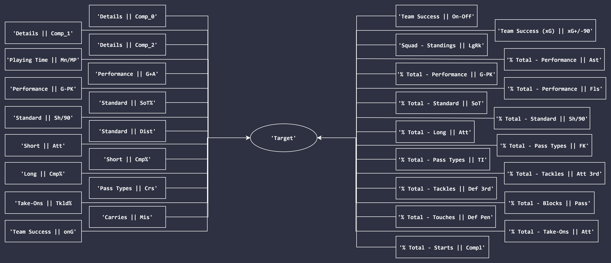

An overview of the model created for forwards.
This model was built to act as an objective baseline for choosing forwards to be included in the FTOTS. Details of the overall outlook of the model are provided below.
Imputation method: 10-neighbour k-Nearest Neighbours
Algorithm chosen: Light Gradient Boosting Machine
Number of features chosen: 33 (32 selected using a customised implementation of Recursive Feature Elimination, after which the binary-encoded league variable was included and two percent-of-total columns were dropped)
Accordingly, the features selected for the forward model were as follows:

The interactive plot provided below showcases the results of a three-component Principal Component Analysis undertaken (on the test set) for the aforementioned 33 variables on all of the available seasons for forwards (after imputation of nulls), with information about model choices included. Each data point here represents a forward. Colours of the points represent the following:
Click on legend once to exclude a trace. Double-click to isolate a trace.
The same plot, broken down by leagues, are provided below. Overall, it was observable that the points in blue (i.e. players only included in the model's choices) seemed to be scattered closer to the points in green (players included in both the actual FTOTS and the model's choices) than the points in pink (players only included in the actual FTOTS). This could essentially point to a general trend for choosing players into the FTOTS having been captured by the model.
Of the 162 possible inclusions in the test set, the forward model was able to choose an equivalent (either the exact same player chosen by the current system or one with the same score in the scoring method utilised) or better alternative to the actual inclusion 94.44% of the time; directly better alternatives were chosen 21.6% of the time.
More information on the forwards in the test set included in the FTOTS and those chosen by the model can be accessed by seasons under findings.